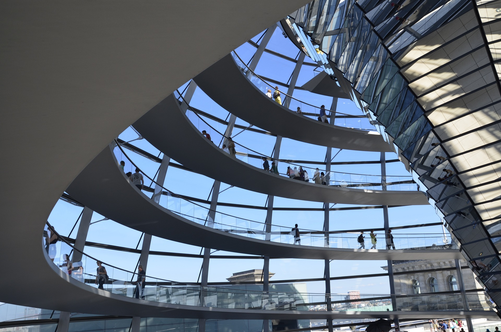

Discovery Siltron là một doanh nghiệp thành viên trực thuộc hệ sinh thái của Tập đoàn Discovery với vai trò là đơn vị tiên phong trong lĩnh vực sản xuất và cung ứng nguyên vật liệu cho ngành công nghiệp bán dẫn và chip toàn cầu. Tự hào là doanh nghiệp Việt Nam đầu tiên nghiên cứu và đầu tư trong lĩnh vực này, Discovery Siltron không ngừng hoàn thiện chất lượng sản phẩm của mình để góp phần thúc đẩy sự phát triển của ngành sản xuất vật liệu bán dẫn và chip tại Việt Nam trong tương lai, từ đó hiện thực hóa tầm nhìn đưa Việt Nam trở thành “thung lũng silicon” của khu vực và thế giới.
Xem Thêm >>


Trở thành một Công ty có tiềm lực, năng động, có sức cạnh tranh mạnh mẽ, luôn luôn hướng đến chính phục các mục tiêu cao hơn và là sự lựa chọn hàng đầu của mọi đối tác và khách hàng. Đi đầu cung ứng sản phẩm công nghệ gốc Silicon hàng đầu thế giới từ Việt Nam.
Xem Thêm >>Discovery Siltron hướng đến mục tiêu phát triển bền vững và trở thành nhà cung cấp hàng đầu Việt Nam đối với các sản phẩm nguyên vật liệu bán dẫn gốc silicon thông qua chiến lược cải tiến không ngừng về mặt công nghệ, con người, và hạ tầng của mình.
Xem Thêm >>